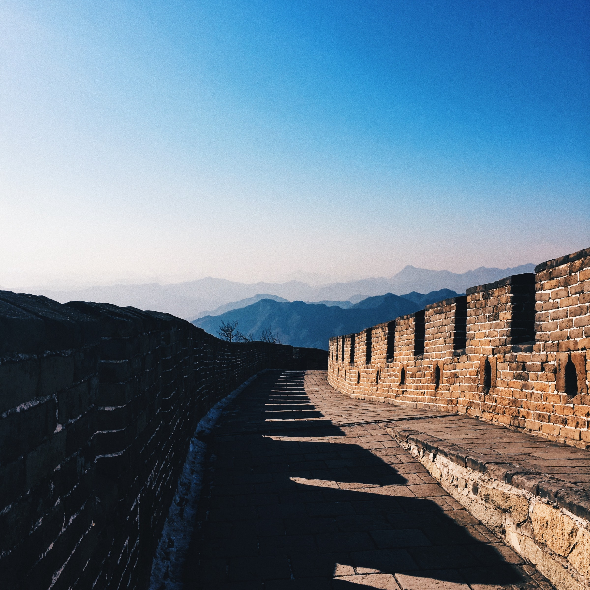

Check this out.
The Colosseum is an amphitheatre built in Rome under the Flavian emperors of the Roman Empire. It is also called the Flavian Amphitheatre. It is an elliptical structure made of stone, concrete, and tuff, and it stands four stories tall at its highest point.
The Great Wall of China is a series of fortifications that were built across the historical northern borders of ancient Chinese states. It is the longest structure humans have ever built. It is about 21,196 kilometers long, 9.1 metres (30 feet) wide and 15 metres high.
 Machu Picchu, Ancient fortress city of the Incas in the Andes Mountains, south-central Peru. Perched near Cuzco in a narrow saddle between two sharp peaks, at an elevation of 7,710 ft (2,350 m), it escaped detection by the Spaniards, and its existence was made known only in 1911 by U.S. explorer Hiram Bingham.
Machu Picchu, Ancient fortress city of the Incas in the Andes Mountains, south-central Peru. Perched near Cuzco in a narrow saddle between two sharp peaks, at an elevation of 7,710 ft (2,350 m), it escaped detection by the Spaniards, and its existence was made known only in 1911 by U.S. explorer Hiram Bingham. The Great Pyramid of Giza is a huge pyramid built by the Ancient Egyptians. It stands 18.4 km from Cairo, Egypt. It is the oldest of the Seven Wonders of the Ancient World, and the only one to remain mostly intact. When it was built it was 146.5 metres (481 feet) tall.
The Great Pyramid of Giza is a huge pyramid built by the Ancient Egyptians. It stands 18.4 km from Cairo, Egypt. It is the oldest of the Seven Wonders of the Ancient World, and the only one to remain mostly intact. When it was built it was 146.5 metres (481 feet) tall.